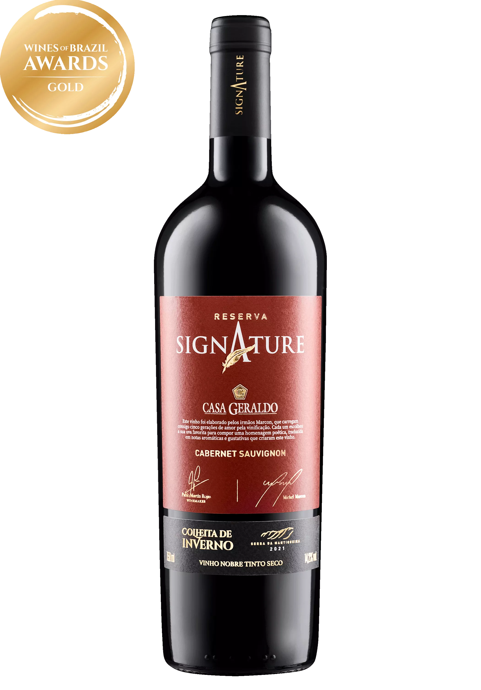

Origem da Marca
A Vinharia Agnello nasceu da paixão de um grupo de amigos por vinhos de qualidade e da vontade de compartilhar essa paixão com outras pessoas. Fundada em 2008, a empresa começou como uma pequena loja de vinhos em uma cidade do interior, oferecendo uma seleção cuidadosamente escolhida de rótulos nacionais e internacionais.
Controle de Qualidade
Todos os vinhos comercializados pela Vinharia Agnello passam por um rigoroso processo de seleção. A equipe avalia origem, safra e características sensoriais, garantindo que apenas produtos de alta qualidade cheguem até os clientes. A empresa mantém parcerias com vinícolas renomadas, assegurando a autenticidade e excelência de cada rótulo oferecido.

Seleção de Vinhos
A loja conta com uma ampla variedade de vinhos nacionais e importados, atendendo desde iniciantes até apreciadores mais exigentes. O catálogo é constantemente atualizado para oferecer novas experiências e descobertas.
Experiência do Cliente
Mais do que vender vinhos, a Vinharia Agnello busca proporcionar momentos especiais. A empresa investe em um atendimento personalizado e realiza eventos e degustações que aproximam os clientes do universo do vinho.
Top 5 Vinhos Mais Vendidos
- Cabernet Sauvignon Reserva
- Merlot Premium
- Malbec Argentino
- Chardonnay Branco Seco
- Espumante Brut Rosé
